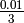

5. Tutorial: Cantilever bending¶
5.1. Problem Statement¶
In this tutorial, we will be focussing on a cantilever problem. A cantilever is a long, slender structure that is fixed on one end and free on the other (see the figure). Cantilevers normally undergo bending forces, which are critical especially when the cantilever is long.
{kind=link}
We’ll be constructing an elastic steel cantilever with dimensions [length, width and thickness]. A force of 10N will be applied in 4s at the free end of the cantilever in the negative Z-direction. We will be using shell elements to compute the displacement at the free end of the beam and the stresses induced in it. This will be a static bending-only problem.
5.2. Creating the LS-DYNA input file¶
Create the geometry with the
--shelloption with elements along the length and widthcreateMesh --x 100 --y 10 --nx 10 --ny 2 --shell --geo cantilever_100_2.k
The thickness of the geometry is provided in the *section_shell card we do not have to provide the z-thickness now.
Create an LS-DYNA template file as in the previous tutorial and copy it to another file named ‘cantilever_bending.k’.
setupDynaTemplate cp dynaTemplate.k cantilever_bending.k
Edit the LS-Dyna input file ‘cantilever_bending.k’ to provide the simulation parameters
Show parameter cardParameter Name Value endT 4000 dtout 4000 dtmin 10 dtmax 4000 You will now have to provide the boundary conditions to the problem:
Open the created file in LS-PrePost
lspp42 cantilever_100_2.k &.Orient the geometry in the top view (viewing into the Z-axis) by typing
topin LS-PrePost’s command window.Choose the nodes on one edge of the cantilever beam and save them as fixedNodes.g with node set ID 1.
Choose the nodes on the other edge and save them as freeNodes.g with node set ID 2.
Run ‘reformat_nodes_prepost’ on these two files to convert them into LS-Dyna format.
reformat_nodes_prepost fixednodes.g 1 fixednodes.k reformat_nodes_prepost freenodes.g 2 freenodes.k
Apply the boundary conditions on the fixed nodes such that these nodes are fixed in all degrees of freedom (in all axes)
Show boundary conditions card
The next step is the apply the load on the free nodes of the cantilever
For this, you will require the *load_node_set card.
When using this card, the load is applied on each node in the node set. Our problem states that the total load applied on this edge is 10N (0.01kN). So, we have to divide the total load by the number of nodes.
We have divided our width into 2 elements which means that there are 3 nodes along this edge. The load-per-node along this edge is then:  kN i.e., 3.33e-3 kN.
Show load card
Apply elastic material property to the cantilever beam just as in the previous example.
Show material cardMaterial ID Density Elastic Modulus Poisson Ratio Elastic 1 7.85e-6 200.0 0.3 Log into a compute node and run the analysis
ssh leadx03 module add lsdyna/7.0.0 cd tutorial2 lsdyna_d i=cantilever_bending.k exit
View the resulting displacement and stresses in LS-PrePost.
lspp42 d3plot
5.3. Solution file¶
You may copy the solution file to test the example
cp -r ~/kurs-ss2015/solutions/solution_cantilever_bending ~/solutions
The folder ‘solution_cantilever_bending’ containing this example has now been copied to the ‘solutions’ folder in your home directory. You may now try out the example or tweak it for the assignment.